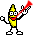

阿空 Kong
我只是個沽名釣譽、妄想大家都崇拜／寵愛我的暴露狂。
2012-04-07 10:20:34
Responses :
latest
路易士 X 攝影魂
說
[emo20]
陽光追尋者 O先生
說
我也是
mphototw
說
很棒啊
達文豬
說
至少你還有人要看阿 我..............
M. 拉維.來福.鄭
說
我的確還蠻崇拜你的
哆啦A莫
喜歡
呵 我喜歡你這樣的自述
刀鋒龍ˊ。ω。ˋ
恩，我知道
背心借貸，樹先生
覺得
也沒什麼不好。
李ＡＢ
舔
貝戎魚
本噗開放趁亂告白(?)
李虎牙
說
哇係volvo~~
說
讚啦!!!
弓百弓-白毫金剛狼
要是有你的條件..我也很想
淘氣阿丹
說
的確是很多人崇拜你不是嗎
senses_520
說
那你就讓大家寵愛吧…繼續曝露吧！（我要看
伊諾。F
這樣很好啊!! 大家都喜歡您^^
HOWTOBE
說
我也很崇拜你寵愛你
§ Emperor §
說
阿空 Kong
啊哈哈哈 這回應數量真讓我嚇到了
大家對我真好
淘氣阿丹
說
那快發點照片犒賞一下大家,接受大家的稱讚吧
HOWTOBE
說
這是一定要的！
孫貴妃
說
身材好露了大家愛看
傑弗瑞
說
這部是妄想歐。
jindream
我想看
keiikoichi
說
其實對你也是也部份崇拜感(更正確來說或許應該是幻想
山茶爸
說
同意樓上